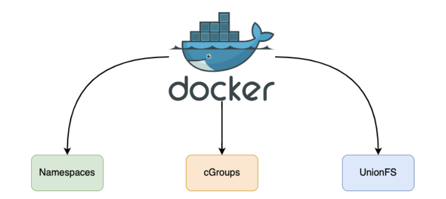
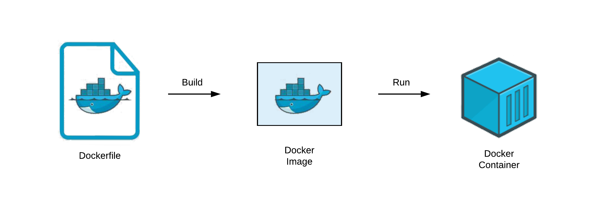
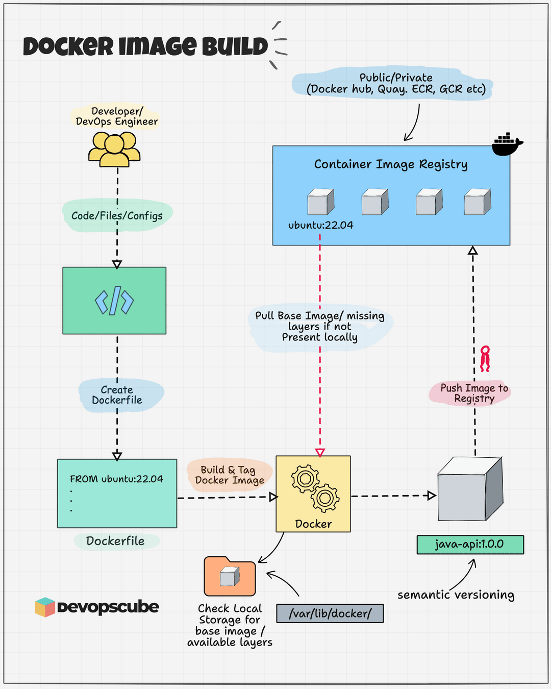

04. Dockerfile 到容器(DONE)#
Author by: 张柯帆
在云原生世界里，Dockerfile 远不止是简单的构建脚本；它是容器世界的“创世蓝图”，定义了独立、可移植、可隔离的运行环境。不过，这份蓝图本身并无魔力，它的魔力——如图所示——源于 Docker Engine 在背后对 Linux 内核三大核心技术（Namespaces、Cgroups、UFS（Union File System，联合文件系统））的巧妙编排与运用。

在深入底层技术细节前，我们先理解 Dockerfile → Docker 镜像 → Docker 容器 的转化过程。我们可以用一个简单的比喻理清三者关系：
Dockerfile 如同建筑蓝图，以文本指令详细描述“最终成品”的组成（所需建材）与建造步骤，本身静态且人类可读；Docker 镜像（Image）是依蓝图打造的“样板间”，只读且不可变，虽无法直接“入住”，却包含运行所需的所有要素——代码、运行时、库、环境变量与配置文件；Docker 容器（Container）则是将样板间“落地部署”后可使用的房子，作为镜像的运行实例，动态且可操作。在容器内的所有改动仅作用于当前实例，不会影响作为“样板间”的镜像本身。

这张图清晰展示了它们的生命周期关系：
编写 Dockerfile：开发者定义应用环境所需的一切。
执行
docker build：Docker Engine 读取 Dockerfile 并执行其中指令，最终生成只读的 Docker 镜像。这个镜像内部是分层结构，我们后续会详细探讨。执行
docker run：Docker Engine 以只读镜像为基础，在其之上创建可写的容器层，再启动进程。“只读镜像层 + 可写容器层”的组合，搭配独立的进程空间、网络空间等，共同构成运行中的 Docker 容器。同一个镜像可创建无数个相互隔离的容器。
现在，带着这个宏观概念，我们以一份典型的 Dockerfile 为线索，深入剖析这三大技术在“镜像构建（docker build）”与“容器运行（docker run）”两个核心阶段的协同逻辑，以及它们具体产生的影响。
注：以下讨论基于 Linux 系统
1. 经典 Dockerfile#
我们从一份构建简单 Python 应用的 Dockerfile 入手，其指令逻辑对应容器环境的核心构建步骤：
# Phase 1: 基础镜像（构建环境的起点）
FROM ubuntu:22.04
# Phase 2: 环境配置与代码注入
WORKDIR /app # 设定容器内工作目录
COPY . . # 将本地当前目录文件复制到容器工作目录
# Phase 3: 依赖安装（构建可运行的应用环境）
RUN apt-get update && \
apt-get install -y python3 python3-dev python3-pip && \
pip3 install -r requirements.txt
# Phase 4: 定义运行时指令（容器启动后执行的命令）
CMD ["python3", "main.py"]
2. docker build 与 UFS#
当执行 docker build -t my-python-app . 时，Docker Engine 开始解读这份“蓝图”，而 Union File System（联合文件系统）（此处以 Docker 当前默认存储驱动、现代实现的 Overlay2 为例）是构建过程的核心支撑。docker build 的本质，就是利用 UFS 的分层能力，将 Dockerfile 的每一条指令“固化”为不可变的镜像层（Image Layer）。
2.1 基础镜像指令#
Docker 会先检查本地是否存在类似 ubuntu:22.04 基础镜像。若存在，直接将该镜像的所有只读层作为本次构建的“底层基础”；若不存在，则自动从远端镜像仓库（如 Docker Hub）拉取。在 Overlay2 机制中，这相当于确定未来容器文件系统 lowerdir（Overlay2 中的“底层目录”，用于存储只读层数据）堆栈的最底层部分。
这一设计实现了极致的资源复用：上百个依赖 Ubuntu 基础镜像的应用，在宿主机磁盘上可共享同一份基础系统文件，极大节省了存储空间。
2.2 文件系统修改类指令#
对于 WORKDIR /app、COPY . .、RUN ... 这类会修改文件系统的指令（如创建目录、复制文件、安装软件），Docker 会执行一套标准化流程：
启动临时“中间容器”（基于上一步的镜像层创建，构建完成后自动销毁）；
在中间容器内执行当前指令；
完整记录指令产生的文件系统变更（新增、删除、修改），生成新的独立只读层；
新层“堆叠”在前一个镜像层之上，成为下一条指令构建时
lowerdir堆栈的一部分。
Overlay2 实现细节#
每一条 RUN 指令执行后产生的文件变更，都会被保存在 /var/lib/docker/overlay2/ 目录下的独立子目录中。例如，apt-get install 安装的 Python 二进制文件、依赖库，会被记录在新的镜像层目录内。
若某条指令删除了下层镜像中的文件（如 RUN rm /tmp/test.txt），Overlay2 不会直接修改底层只读文件，而是在新层中创建 whiteout 标记（一种主/次设备号均为 0 的特殊字符设备文件），用于在最终的“联合视图”中“遮蔽”底层目标文件——即让容器“看不到”被删除的文件。
核心影响#
Docker 的“构建缓存”机制正是依托这些不可变分层实现的。若再次执行构建，只要 Dockerfile 中某一行指令及其之前的所有指令未改动，Docker 会直接复用本地已有的对应镜像层（即“命中缓存”），实现“秒级构建”。
同时，执行 docker push（推送镜像到仓库）或 docker pull（拉取镜像）时，远端仓库只会传输本地缺失的镜像层，而非整个镜像，大幅减少网络传输量，提升镜像分发效率。
至此，docker build 流程完成。最终得到的 my-python-app 镜像，并非单一“大文件”，而是包含“镜像层列表、镜像元数据（如启动命令、环境变量）”的集合。这种分层设计，也为后续容器的“轻量级实例化”奠定了基础。
3. docker run 关键步骤#
当执行 docker run -d --name my-app -m 512m --cpus=".5" my-python-app 时，Docker 会启动“组合拳”——协同 UFS、Namespaces、Cgroups 三大技术，将静态镜像转化为动态运行的容器。
3.1 UFS 构建可写文件系统#
Docker 存储驱动（此处为 Overlay2）会以 my-python-app 镜像的所有只读层作为 lowerdir，同时在其之上创建 新的空可写目录 作为 upperdir（Overlay2 中的“上层目录”，存储容器运行时的写操作数据）；此外，还会创建 merged 目录（Overlay2 中的“联合目录”），将 upperdir 与 lowerdir 进行“联合挂载”，形成统一的文件系统视图。
这个 merged 目录会作为容器的根文件系统（/）。容器运行中的所有写操作（如应用 main.py 写入日志、创建临时文件），都会通过 写时复制（Copy-on-Write，简称 CoW） 机制，仅发生在 upperdir 中——底层镜像只读层永远不变。
这一设计带来两大优势：
保障镜像“纯洁性”，避免容器写操作污染基础镜像；
实现容器“轻量级启动”：成百上千个基于同一镜像的容器，可共享所有只读层，每个容器仅需额外占用
upperdir（通常仅几 KB 到几十 MB）的存储空间。且容器销毁极为“廉价”——只需删除对应的upperdir和挂载关系，不会影响底层镜像。
3.2 Namespaces 实现隔离#
在文件系统准备的同时，Docker 会通过 Linux 内核提供的 clone() 或 unshare() 系统调用（传入 CLONE_NEW* 系列标志），为即将启动的容器进程创建一套独立的 Namespaces，实现“进程看不到外部、外部看不到进程”的隔离效果。
MNT Namespace（
CLONE_NEWNS）
这是第一个被创建的 Namespace。Docker 会将上一步准备好的 merged 目录，挂载为该 Namespace 内部的根目录（/）。
隔离效果：容器内进程看到的文件系统，仅包含镜像只读层与 upperdir 联合后的内容，无法访问宿主机或其他容器的文件，实现文件系统完全隔离。
UTS Namespace（
CLONE_NEWUTS）
为容器分配独立的主机名（如 --name my-app 设定的名称）和域名。
隔离效果：容器在网络环境中拥有独立“身份标识”，避免主机名冲突，同时让容器内应用可基于自身主机名运行（如部分服务依赖主机名配置）。
IPC Namespace（
CLONE_NEWIPC）
为容器创建独立的进程间通信（IPC）资源池，包括信号量、消息队列、共享内存等。
隔离效果：容器内进程无法与宿主机或其他容器的进程通过标准 IPC 方式通信，防止跨容器的信息泄露与运行干扰。
PID Namespace（
CLONE_NEWPID）
这是实现进程 ID 隔离的核心，也是容器“轻量化”的关键特性之一。
隔离效果：在该 Namespace 内启动的第一个进程（即 Dockerfile 中 CMD 指令定义的 python3 main.py），其 PID 会被设为 1（相当于宿主机的 init 进程），成为容器内所有后续进程的“祖先”。容器内进程无法看到或操作宿主机的任何进程（即使是宿主机 PID 为 1 的 systemd 进程），甚至无法感知宿主机存在，极大提升运行安全性。
NET Namespace（
CLONE_NEWNET）
为容器创建一套全新的独立网络栈，包括虚拟网卡（如 veth 对的一端）、IP 地址、路由表、端口空间等。
隔离效果：容器拥有独立“网络环境”，其端口（如应用监听的 80 端口）与宿主机、其他容器的端口完全独立。docker run 中的 -p 8080:80 参数，本质是在宿主机 NET Namespace 与容器 NET Namespace 之间建立端口映射规则——将宿主机 8080 端口的流量转发到容器 80 端口，实现外部对容器应用的访问。
3.3 Cgroups：设定资源边界#
完成进程隔离后，Docker 还需通过 Cgroups（Control Groups，控制组） 技术，限制容器对宿主机资源的使用，避免单个容器“过度占用资源”影响其他容器或宿主机稳定性。其核心动作如下：
创建控制组目录：Docker 会在 Linux 内核的 Cgroups 挂载点（通常为
/sys/fs/cgroup/）下，为新容器在各个资源子系统（如memory内存子系统、cpuCPU 子系统）中创建独立的控制组目录。例如，内存子系统的控制组目录可能为/sys/fs/cgroup/memory/docker/<container_id>/。配置资源限制参数：解析
docker run中的资源限制参数，并转化为对 Cgroups 文件系统的写操作：--memory 512m（简写--m 512m）：向memory.limit_in_bytes文件写入536870912（即 512MB 对应的字节数），限制容器内存使用上限；--cpus=".5"：向cpu.cfs_period_us文件写入100000（即 100ms 的调度周期），同时向cpu.cfs_quota_us文件写入50000（即每个周期内容器可使用的 CPU 时间上限为 50ms）。
绑定容器进程：将容器主进程（即 PID Namespace 中 PID 为 1 的进程）的实际 PID，写入上述控制组目录下的
tasks文件。这一步是“生效关键”——表示该进程及后续衍生的子进程，均受当前控制组规则约束。
从 tasks 文件写入 PID 的那一刻起，Linux 内核会严格执行资源限制：
容器内所有进程的内存使用总和一旦超过 512MB，内核的 OOM Killer（内存溢出杀手）会触发，自动终止容器内占用内存过高的进程，避免影响宿主机整体内存稳定性；
在每 100ms 的 CPU 调度周期内，容器内所有进程可使用的 CPU 时间总和不超过 50ms（即占用宿主机 50% 的单个 CPU 核心资源），实现容器间 CPU 资源的公平分配。
Cgroups 的核心价值：为容器资源使用划定“硬边界”，是云环境中“多租户部署”“高密度容器运行”的技术基石——确保容器之间、容器与宿主机之间的资源隔离，避免“一个容器故障拖垮整个系统”的风险。
4. 技术协同结论#
回顾从 Dockerfile 到运行态容器的全流程，可清晰看到三大技术的分工与协作：
Dockerfile：静态的“隔离蓝图”，定义容器的基础环境、依赖与启动逻辑；Union File System：构建阶段将“蓝图”固化为高效可复用的分层镜像，运行阶段提供轻量级可写环境，解决“容器环境是什么”的核心问题；
Namespaces：运行阶段为进程构建全方位的隔离视图，使其误以为“独占整个系统”，解决“进程在哪个隔离空间运行”的问题；
Cgroups：运行阶段为隔离环境设定不可逾越的资源边界，解决“容器能使用多少宿主机资源”的问题。
Docker 的伟大，并非发明了 Namespaces、Cgroups 或 UFS——这些都是 Linux 内核早已存在的能力——而是将这些孤立、复杂的底层技术，通过一套简单、一致的工具链（Dockerfile 语法、docker 命令行）封装、编排，最终为用户呈现“轻量、秒级启动、可移植”的容器体验。此外，Docker 公司还管理着镜像仓库（如 Docker Hub）进行统一管理，极大方便了社区使用。

5. 总结与思考#
通过拆解 Dockerfile 到运行态容器的全流程，我们能跳出“容器是轻量级虚拟机”的误区，更深刻地理解：容器本质是 Linux 内核三大技术（Namespaces、Cgroups、UFS）协同作用的“进程隔离环境”。Docker 工具链的价值，在于将复杂的内核能力转化为“开发者友好”的接口，让“一次构建，到处运行”的理念真正落地。